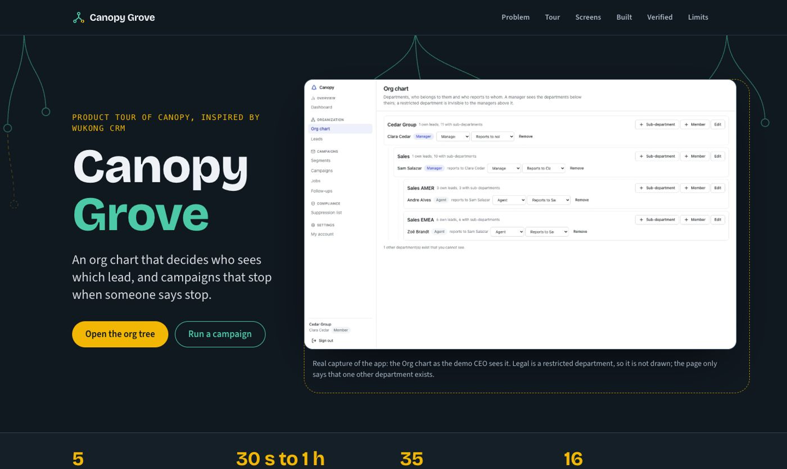

CRM · Org chart and campaigns · 2026-10
Canopy: an org chart that decides who sees which lead
An org chart that decides who sees which lead, and campaigns that stop when someone says stop.

The CRM itself is private and not hosted: the public repo and the showcase site contain only the showcase source. Every screenshot is a real capture of the running app with synthetic data; the in-page tour is a labeled illustration of the app's own rules, not a live backend. Original implementation inspired by WuKong CRM; no affiliation.
01 — The problem
A company with several departments needs each team to see only its own leads, managers to see the teams below them, and email campaigns that respect consent, survive restarts and never send to someone who has unsubscribed.
Defining workflow: Create a parent department and two children, add leads, enroll a consented segment, let a scheduled step run and check the email and the follow-up task. Unsubscribe a contact before a queued send and watch the send not happen. Another department's agent cannot see the restricted leads.
02 — What I built
One of eleven independent CRM MVPs in a single monorepo, each with its own database, migrations, tests and review packet. This one is inspired by WuKong CRM and is called Canopy.
- An editable department tree with managers, agents and reporting lines; cycles refused by the service and by a database trigger
- Explicit subtree visibility computed in PostgreSQL: managers see the departments below, a restricted department hides itself from the ones above, a lead you cannot see does not exist for you
- Department-owned leads with append-only transfer history and manager rollups; a segment builder over a bounded allowlist
- Campaign sequences (wait, wait until local time in an IANA zone, condition, task, email) run by a separate worker over durable PostgreSQL jobs: leases, retries with backoff, dead letters, run history
- Consent history, a suppression list, a signed unsubscribe link, and consent re-read before every send; delivery is at-least-once with a documented crash window
03 — How it was built
- 01
Specify before building
An acceptance document names the persona, the bounded scope, what is deferred, and ties every required feature to evidence (a test, an end-to-end journey or a recorded check).
- 02
Model the database so the rules hold even if the code is wrong
A Prisma schema plus a hand-written migration of CHECK constraints, composite foreign keys that pin every record to its workspace, and triggers. The tests try to break these from raw SQL.
- 03
Build the distinguishing workflow through every layer
An editable department tree with managers, agents and reporting lines; cycles refused by the service and by a database trigger
- 04
Prove it in a fresh clone
20 gate checks pass and 0 fail in a fresh clone of commit 4d3e8b38f7: 7 unit, 35 integration against a real PostgreSQL, 16 browser tests on the production build, container start, a live black-box check, restart persistence, backup and restore, and a production-dependency audit.
- 05
Review it as an independent reader would
A review packet lists what is implemented, what is measured, what was fixed on the way, and every known limit and release blocker, so nothing here is claimed beyond its evidence.
04 — Results
20 gate checks pass and 0 fail in a fresh clone of commit 4d3e8b38f7: 7 unit, 35 integration against a real PostgreSQL, 16 browser tests on the production build, container start, a live black-box check, restart persistence, backup and restore, and a production-dependency audit.
Screenshots on the showcase site are real captures at 1440, 768 and 390 pixels wide, taken from the production build with synthetic data.
05 — What I'd do next
- Plain-text email only: no tracking, bounce handling or inbound mail; segments cannot nest all/any groups
- Running campaigns are frozen; the chart is a tree and visibility follows it, not the reporting lines
- At-least-once delivery: a crash between the SMTP server accepting a message and the send being recorded sends it again with the same Message-ID
- UI labels are English only; not production-ready: no TLS, proxy, monitoring or real email provider provisioned